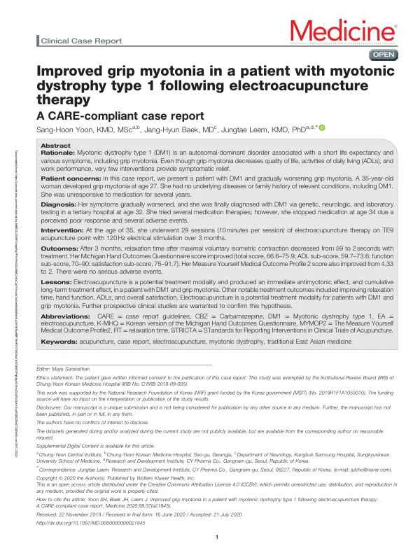

Improved grip myotonia in a patient with myotonic dystrophy type 1 following electroacupuncture therapy
Yoon SH, Baek JH, Leem J
Medicine 99(37):e21845

첫 장 · 오픈액세스First page · open access
논문 소개Summary
근긴장성 이영양증 1형은 상염색체 우성으로 유전되는 병으로 수명이 짧고 증상이 여럿입니다. 그중 파악근긴장은 손을 쥐었다가 펴는 데 시간이 걸리는 증상으로 일상생활과 일에 직접 지장을 주는데, 증상을 덜어 줄 방법이 거의 없습니다.
35세 여성이 27세에 파악근긴장이 생겨 여러 해 약이 듣지 않았고 32세에 3차 병원에서 유전자 검사와 신경학적 검사, 검사실 검사로 진단을 받았습니다. 여러 약을 시도했으나 반응이 나쁘고 이상반응이 있어 34세에 끊었습니다. 35세에 TE9(외관)에 120헤르츠 전침을 회당 10분씩, 3개월에 걸쳐 29회 받았습니다.
TE9는 팔의 폄근이 지나가는 자리이고, 파악근긴장은 쥔 손을 펴지 못하는 증상이므로 폄 쪽을 자극한 선택이었습니다.
3개월 뒤 최대 수의 등척성 수축 후 이완 시간이 59초에서 2초로 줄었습니다. 미시간 손 기능 설문 한국어판 총점은 66.6점에서 75.9점으로, 일상생활 하위점수는 59.7점에서 73.6점으로, 기능 하위점수는 70점에서 90점으로, 만족도 하위점수는 75점에서 91.7점으로 올랐습니다. 스스로 정하는 결과지표는 4.33점에서 2점으로 내려갔습니다. 중대한 이상반응은 없었습니다.
이완 시간 59초가 2초가 되었다는 것은 손을 한 번 쥐면 1분 가까이 펴지 못하던 사람이 곧바로 펴게 되었다는 뜻입니다. 저자들은 전침에 즉각적인 항근긴장 효과와 누적되는 장기 효과가 함께 있었다고 보았습니다. 이 보고는 CARE 지침에 맞춰 작성했고 기관생명윤리위원회 심의 면제를 받았으며 환자의 서면 동의를 얻었습니다.
증례 하나이므로 여기서 멈춰야 합니다. 저자들도 이 가설을 확인하려면 전향 임상연구가 필요하다고 적었습니다.
Myotonic dystrophy type 1 is an autosomal dominant disorder with a short life expectancy and a range of symptoms. Grip myotonia — the delay in releasing the hand after a grip — bears directly on daily activities and work, yet almost nothing offers symptomatic relief.
A 35-year-old woman had developed grip myotonia at 27 and gone several years without response to medication before genetic, neurological and laboratory testing at a tertiary hospital gave the diagnosis at 32. She tried several drug therapies but stopped at 34 for poor perceived response and adverse events. At 35 she received 29 sessions of electroacupuncture at TE9 with 120 Hz stimulation, ten minutes each, over three months.
After three months, relaxation time following maximal voluntary isometric contraction fell from 59 seconds to 2. The Korean version of the Michigan Hand Outcomes Questionnaire rose from 66.6 to 75.9 in total score, from 59.7 to 73.6 for activities of daily living, from 70 to 90 for function, and from 75 to 91.7 for satisfaction. The Measure Yourself Medical Outcome Profile 2 fell from 4.33 to 2. There were no serious adverse events.
A relaxation time going from 59 seconds to 2 means someone who could not open her hand for nearly a minute after gripping could now open it at once. The authors read this as an immediate antimyotonic effect together with a cumulative long-term one. The report was written to the CARE guideline, received institutional review board exemption, and carries the patient's written consent to publication.
Being one case, it stops here. The authors state that prospective clinical studies are needed to confirm the hypothesis.
인용Cite
Yoon SH, Baek JH, Leem J. Improved grip myotonia in a patient with myotonic dystrophy type 1 following electroacupuncture therapy. Medicine. 2020;99(37):e21845. doi:10.1097/MD.0000000000021845